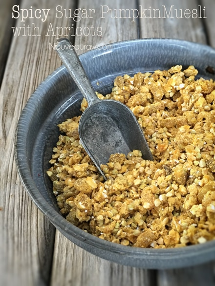

Spicy Sugar Pumpkin Muesli with Apricots

~ raw, vegan, gluten-free, nut-free ~
Sugar pumpkins, cayenne… in a cereal? Trust me; this turned out to be a wonderful savory cereal with a hint of sweetness. Of course, you can always increase the sweet flavor… but I really have to say that I enjoyed this treat.
Drizzling a little raw honey on it would be so scrumptious! You can use raw or lightly steamed sugar pumpkin or even sweet potatoes. It is all about digestion and how your body handles this tuber.
Why did I choose sugar pumpkins?!
Sugar pumpkins are not a high-calorie starch food (has just 90 cal/100 gram). It doesn’t contain any saturated fats or cholesterol; and is a rich source of dietary fiber, antioxidants, vitamins, and minerals.
According to the National Institute of Health, just one cup of mashed pumpkin contains more than 200 percent of your recommended daily intake of vitamin A, which aids vision, particularly in dim light. If you keep having to increase the brightness of your computer… pumpkins should be on your dinner plate. hehe
Looking for peeper (eye) protection? They are rich in carotenoids, the compounds that give the gourd their bright orange color, including beta-carotene, which the body converts into a form of vitamin A. Really, there is just a whole lotta’ healthy stuff going on within a pumpkin… see enjoy them! I hope you enjoy this brightly colored morning cereal. Blessings, amie sue
Ingredients:
Yields roughly 2 1/2 cups
- 2 cups buckwheat, soaked
- 2 cups oats, soaked
- 2 cups sweet potato or pumpkin puree
- 1 cup diced dried apricots or golden raisins
- 1/4 cup maple syrup
- 1/4 tsp cayenne
- 1/4 tsp Himalayan pink salt
Preparation:
- Soak, drain, and rinse the buckwheat and oats. Hand squeeze the excess water from the oats. Place in a large bowl.
- Add the pumpkin or sweet potato puree, apricots, maple syrup, cayenne, and salt. Mix well.
- Spread the batter, edge to edge on the teflex sheets that come with the dehydrator and dry at 145 degrees (F) for 1 hour, then reduce to 115 degrees (F) and continue to dry for roughly for 8 hours or until dry.
- I used 2 Excalibur dehydrator trays.
- Once dry, place in a food processor, fitted with the “S” blade, pulse until it reaches a small crumble.
- Store in an airtight glass container on your counter for several weeks. Enjoy soaked in nut milk, or yogurt.
Culinary Explanations:
- Why do I start the dehydrator at 145 degrees (F)? Click (here) to learn the reason behind this.
- When working with fresh ingredients, it is important to taste test as you build a recipe. Learn why (here).
- Don’t own a dehydrator? Learn how to use your oven (here). I do however truly believe that it is a worthwhile investment. Click (here) to learn what I use.
© AmieSue.com